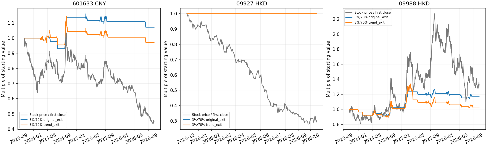

研究日2026-10-19，行情截止2026-10-16。长城为A股601633；赛力斯为港股09927；阿里为港股09988。每股每情景独立初始10万本币，长城用人民币、港股用港元，不计人民币/港元汇兑收益，也不把三股金额相加当作组合收益。
风险与投入上限、入场和退出参数完整继承上一轮：1%/30%、2%/50%、3%/70%、5%/100%，对比原3R/20日退出与无固定止盈和期限的趋势退出；保留初始2ATR、移动3ATR及10日低点退出，不加杠杆、不加仓，收盘信号下一开盘成交。
赛力斯2025-11-05上市，无法做真实三年H股回放。先用20个交易日预热通道，实际比较开始日见表；被动基准也从同日开始，未使用上市前A股历史或虚构价格。该股无前两年/最后一年独立分段，短样本不年化宣传。其他两股保留原前三年及分段复查口径。
港股按各100股一手，成交不套A股10%涨跌停，未建模日内交易；次日开盘执行来自信号时点，不是把港股误设为A股T+1。采用香港现金账户的HKD口径；股票日历来自提供方，没有跨市场前向填充，也没有独立审计完整港交所日历。
港股佣金假设双边0.03%且最低3港元，平台费每次15港元，滑点双边0.05%；这是研究假设，实际券商费率未知。印花税双边2023-11-17前0.13%、其后0.1%并向上取整港元；交易费0.00565%、证监会征费0.0027%、会财局征费0.00015%；交收费2025-06-30前0.002%且最低2最高100港元，之后0.0042%无最低最高，适用费用按分取整。长城A股沿用原交易费用与红利税。
港股主比较扣交易成本、股息按税前：个人税务身份及港股通路径未知，另提供20%股息税敏感性。港元现金股息根据行情源未复权/前复权差分推算，除净日与新浪独立日程核对；阿里实际美元股息到账港元转换率未核实，因此港股结果为该现金代理假设下的近似回放。不能将其标为用户实际税后收益。
所有窗口均已在本次研究中查看，属于历史情景比较，不称独立样本外或稳定收益验证。风险比例是开仓名义预算，不是实际亏损或最大回撤上限；不据最高收益事后调整规则。
赛力斯H股预热后214个交易日没有触发20日上穿入场事件，因此所有仓位/退出档均为零交易、零收益、零回撤；这一结果表示规则未参与，不构成盈利能力或低风险已验证。
| 仓位 | 退出 | 期间收益 | 最大回撤 | 开仓/平仓 | 胜率 | 每次平均投入本币 | 平均持仓 |
|---|---|---|---|---|---|---|---|
| 原方案 | 原短线 | 2.31% | -2.77% | 9/9 | 33.33% | 18283.90 | 2.87% |
| 原方案 | 趋势 | -0.97% | -5.09% | 8/8 | 25.00% | 18021.20 | 3.18% |
| 风险2%/投入上限50% | 原短线 | 5.16% | -5.70% | 9/9 | 33.33% | 36917.59 | 5.66% |
| 风险2%/投入上限50% | 趋势 | -1.73% | -10.18% | 8/8 | 25.00% | 36340.72 | 6.42% |
| 风险3%/投入上限70% | 原短线 | 7.15% | -8.41% | 9/9 | 33.33% | 55791.26 | 8.45% |
| 风险3%/投入上限70% | 趋势 | -2.83% | -14.92% | 8/8 | 25.00% | 55048.43 | 9.66% |
| 风险5%/投入上限100% | 原短线 | 9.63% | -14.14% | 9/9 | 33.33% | 92740.43 | 13.72% |
| 风险5%/投入上限100% | 趋势 | -5.23% | -22.59% | 8/8 | 25.00% | 89133.19 | 15.48% |
| 起始投入上限 | 买入持有收益 | 最大回撤 |
|---|---|---|
| 30.00% | -14.33% | -17.30% |
| 50.00% | -22.93% | -27.23% |
| 70.00% | -32.96% | -38.41% |
| 100.00% | -47.30% | -53.68% |
| 仓位 | 退出 | 期间收益 | 最大回撤 | 开仓/平仓 | 胜率 | 每次平均投入本币 | 平均持仓 |
|---|---|---|---|---|---|---|---|
| 原方案 | 原短线 | 0.00% | 0.00% | 0/0 | — | — | 0.00% |
| 原方案 | 趋势 | 0.00% | 0.00% | 0/0 | — | — | 0.00% |
| 风险2%/投入上限50% | 原短线 | 0.00% | 0.00% | 0/0 | — | — | 0.00% |
| 风险2%/投入上限50% | 趋势 | 0.00% | 0.00% | 0/0 | — | — | 0.00% |
| 风险3%/投入上限70% | 原短线 | 0.00% | 0.00% | 0/0 | — | — | 0.00% |
| 风险3%/投入上限70% | 趋势 | 0.00% | 0.00% | 0/0 | — | — | 0.00% |
| 风险5%/投入上限100% | 原短线 | 0.00% | 0.00% | 0/0 | — | — | 0.00% |
| 风险5%/投入上限100% | 趋势 | 0.00% | 0.00% | 0/0 | — | — | 0.00% |
| 起始投入上限 | 买入持有收益 | 最大回撤 |
|---|---|---|
| 30.00% | -16.43% | -16.95% |
| 50.00% | -32.85% | -33.89% |
| 70.00% | -41.05% | -42.35% |
| 100.00% | -65.68% | -67.76% |
| 仓位 | 退出 | 期间收益 | 最大回撤 | 开仓/平仓 | 胜率 | 每次平均投入本币 | 平均持仓 |
|---|---|---|---|---|---|---|---|
| 原方案 | 原短线 | 8.01% | -2.96% | 15/15 | 40.00% | 14105.79 | 3.22% |
| 原方案 | 趋势 | 2.21% | -8.92% | 9/9 | 33.33% | 14114.05 | 3.70% |
| 风险2%/投入上限50% | 原短线 | 14.99% | -6.07% | 16/16 | 43.75% | 30010.13 | 6.86% |
| 风险2%/投入上限50% | 趋势 | 1.54% | -17.84% | 13/13 | 30.77% | 26917.27 | 9.16% |
| 风险3%/投入上限70% | 原短线 | 17.37% | -9.67% | 16/16 | 43.75% | 45532.70 | 10.30% |
| 风险3%/投入上限70% | 趋势 | 3.11% | -23.67% | 13/13 | 30.77% | 44516.18 | 14.75% |
| 风险5%/投入上限100% | 原短线 | 32.69% | -17.59% | 16/16 | 43.75% | 85735.76 | 17.45% |
| 风险5%/投入上限100% | 趋势 | 3.94% | -34.36% | 13/13 | 30.77% | 73809.89 | 23.74% |
| 起始投入上限 | 买入持有收益 | 最大回撤 |
|---|---|---|
| 30.00% | 9.67% | -21.45% |
| 50.00% | 19.36% | -34.49% |
| 70.00% | 25.82% | -40.67% |
| 100.00% | 38.74% | -49.54% |